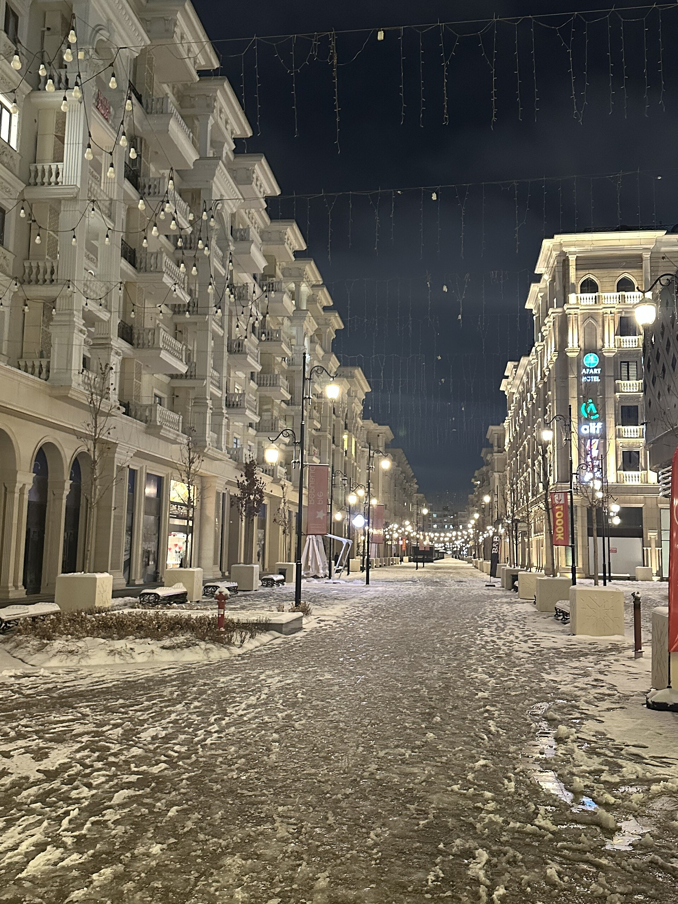

Казахстан и Узбекистан переходят от торговли к производственным цепочкам: 2,8 млрд долларов за полгода
Казахстан — третий торговый партнёр Узбекистана. Два государства реализуют 80 совместных проектов на 1,8 млрд долларов.

Товарооборот между Казахстаном и Узбекистаном в первом полугодии 2026 года достиг 2,8 млрд долларов. По данным Национального комитета по статистике Узбекистана, в январе — июне Казахстан занял третье место во внешней торговле страны — после Китая (9,5 млрд долларов) и России (7 млрд долларов).
По итогам 2025 года двусторонняя торговля составила 4,8 млрд долларов и выросла на 16,2 процента по сравнению с прошлым годом.
Как изменилась структура экспорта
Наиболее заметное изменение наблюдается в структуре экспорта. В 2017 году доля сырья в экспорте Казахстана в Узбекистан составляла 65,3 процента; к 2025 году этот показатель снизился до 35,5 процента. За тот же период доля готовой продукции выросла с 3,4 до 20,5 процента.
В январе — мае 2026 года объём торговли составил 2,3 млрд долларов — это на 37,2 процента больше, чем за тот же период 2025 года. Экспорт Казахстана вырос на 39,5 процента и приблизился к 2,1 млрд долларов.
Пшеница — крупнейшая статья
Пшеница остаётся основной статьёй экспорта Казахстана в Узбекистан: её объём составил 571,6 млн долларов, что означает примерно 27 процентов общего экспорта.
Узбекистан, в свою очередь, поставляет плодоовощную продукцию, текстиль, строительные материалы и химическую продукцию.
- Торговля (январь — июнь 2026): 2,8 млрд долларов
- Торговля (итог 2025 года): 4,8 млрд долларов, +16,2%
- Экспорт Казахстана (январь — май 2026): ~2,1 млрд долларов, +39,5%
- Экспорт пшеницы: 571,6 млн долларов (27%)
- Совместные проекты: 80, ~1,8 млрд долларов
- Дорожная карта инвестиций и торговли: 7,8 млрд долларов
Идея производственных цепочек
Аналитики описывают основную задачу, стоящую перед двумя государствами, как переход от «торговли через границу» к «совместному производству через границу». При таком подходе разные этапы производства продукции осуществляются в двух странах, а готовый товар выводится на третьи рынки.
Экспортный потенциал Казахстана указан в сферах металлургии, машиностроения, нефтехимии, химии, фармацевтики, транспортного оборудования и строительных материалов. Сейчас два государства реализуют 80 совместных проектов; их общая стоимость превышает 1,8 млрд долларов.
Диверсификация крайне важна, потому что ВВП невозможно увеличить лишь за счёт механического наращивания экспорта сырья.
— Фархад Касенов, руководитель исследовательского центра A+ Analytics (The Astana Times)
Инфраструктура
Рост торговли создаёт нагрузку на пункты пропуска на границе. Два государства реконструируют пункт пропуска «Гишткуприк» («Жибек Жолы», Черняевка); после завершения работ его суточная пропускная способность, как ожидается, вырастет с 30 до 70 тысяч человек, и он сможет принимать более 2 000 легковых автомобилей в сутки.
На железнодорожном направлении также строится новая линия; по данным Казахстана, стоимость проекта составляет 545 млн долларов, и он направлен на снижение загруженности станции Сарыагаш.
Третьи рынки
В течение 2026 года два государства объявили и о направлении совместного поиска новых экспортных рынков; среди обсуждавшихся направлений были рынки Сирии и Ирака.
Ограничения
Структура двух экономик
Казахстан и Узбекистан считаются крупнейшими экономиками Центральной Азии, однако их структура различается. У Казахстана меньше населения, но выше валовой внутренний продукт на душу населения; в экономике доминируют нефтегазовая и горнодобывающая отрасли.
Узбекистан занимает первое место в регионе по численности населения, и в его экономике весомое место занимают сельское хозяйство, текстиль, горнодобывающая отрасль и услуги.
Это различие делает два государства взаимодополняющими партнёрами: Казахстан поставляет зерно и промышленную продукцию, а Узбекистан экспортирует плодоовощную продукцию, текстиль и строительные материалы.
Торговля пшеницей
Пшеница остаётся крупнейшей статьёй экспорта Казахстана в Узбекистан: её объём составил 571,6 млн долларов, это примерно 27 процентов общего экспорта.
Казахстан считается одним из крупных мировых экспортёров пшеницы. Узбекистан же покрывает часть своей потребности за счёт импорта.
В последние годы Казахстан стимулирует переход от экспорта зерна к экспорту муки и другой переработанной продукции — это часть политики повышения добавленной стоимости.
Приграничная инфраструктура
Протяжённость границы между двумя государствами превышает 2 000 километров. Самый загруженный пункт пропуска — «Гишткуприк» под Ташкентом (казахское название — «Жибек Жолы», название советского времени — Черняевка).
Пункт был закрыт на реконструкцию 5 февраля 2025 года. После завершения работ его суточная пропускная способность, как ожидается, вырастет с 30 до 70 тысяч человек, и он сможет принимать более 2 000 легковых автомобилей в сутки.
В состав нового комплекса включены два пассажирских терминала общей площадью 10 тысяч квадратных метров.
Железнодорожный проект
Между двумя государствами строится новая железнодорожная линия; её протяжённость указана как 152 километра. По данным Казахстана, стоимость проекта составляет 545 млн долларов.
Линия призвана перераспределить грузопоток на существующем направлении Сарыагаш — Ташкент и снизить загруженность станции Сарыагаш.
Третьи рынки
В августе 2026 года два государства совместно обсудили возможности выхода на рынки Сирии и Ирака. Такое сотрудничество позволяет экспортёрам разделять логистические расходы и формировать более крупные партии.
В сентябре 2026 года Узбекистан назначил первого в истории посла в Сирии — это считается показателем дипломатической активности на данном направлении.
Платёжная инфраструктура
Рост объёмов торговли требует и интеграции платёжных систем. Казахстан работает над внедрением трансграничных QR-платежей с 11 государствами; в списке есть и Узбекистан.
Центральный банк Узбекистана, в свою очередь, обсуждает возможности интеграции единой QR-системы с международными платёжными экосистемами.
7 сентября 2026 года в Узбекистане начался пилотный проект по стейблкоину HUMO, привязанному к суму; пока он рассчитан только на внутренние платежи.
Как читать данные
В торговой статистике стоимостный показатель отличается от физического объёма: при изменении цен рост стоимости может не отражать рост объёма.
Сумма в 1,8 млрд долларов в портфеле совместных проектов представлена как стоимость реализуемых проектов; подробный отчёт о степени их выполнения не обнародован.
Примеры промышленной кооперации
Среди совместных проектов двух государств называются направления автомобильных комплектующих, строительных материалов, химической продукции и агропромышленности.
В модели «производства через границу» разные этапы изготовления продукции осуществляются в двух странах. Такой подход широко распространён в Европе и Юго-Восточной Азии, а в Центральной Азии он относительно нов.
Препятствия
В числе практических препятствий указываются различия в технических регламентах, процедуры сертификации и транспортные расходы. Казахстан — член Евразийского экономического союза, а Узбекистан имеет в нём статус наблюдателя — это создаёт различие в таможенных режимах двух государств.
Поэтому вместе с ростом объёмов торговли возрастает и необходимость согласования вопросов регулирования.
Часть роста торговли может быть связана с ценовыми факторами — в статистике стоимостный показатель отличается от физического объёма. Кроме того, сумма в 1,8 млрд долларов в портфеле совместных проектов представлена как стоимость реализуемых проектов; подробный отчёт о степени их выполнения не обнародован.